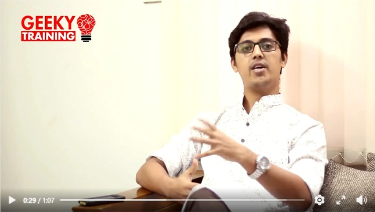

Brand identity
Backpage PR
GRAMEEN DANONE / BRAND RECOGNITION
SDG Brand Champion Award 2025
Backpage PR highlights Grameen Danone Shokti+ receiving recognition under SDG 8 for the Shokti Doi Cup Recycling Project.
Read the PR post ↗MEDIA
Interviews, press coverage, panel discussions and guest appearances. Explore professional perspectives and brand stories from my work.
BROADCAST INTERVIEW
The Brand Maker · Consumer problems and sustainable brand value.
Watch the conversation ↓inPROFESSIONAL PROFILE
Connect with me and explore my professional activity on LinkedIn.
Visit my profile ↗ON STAGE
Guest-speaking appearances, panel discussions and event moments.
Explore appearances ↓GREEN TV / THE BRAND MAKER / INTERVIEW
Is problem-solving the ultimate foundation of branding?
A successful brand is built on more than eye-catching campaigns. In this episode of The Brand Maker on Green TV, I shared my perspective on how addressing real consumer pain points supports sustainable brand growth and market relevance.
Watch on YouTube ↗BEHIND THE SCENES / GREEN TV
Broadcast date: to be added.
PRESS / PR & MEDIA COVERAGE
Selected coverage of brands I have worked with: Grameen Danone recognition and Nutri+ launch reports from Care Nutrition.
Brand identity
GRAMEEN DANONE / BRAND RECOGNITION
Backpage PR highlights Grameen Danone Shokti+ receiving recognition under SDG 8 for the Shokti Doi Cup Recycling Project.
Read the PR post ↗Related launch photograph
NUTRI+ / PRODUCT LAUNCH COVERAGE
A Channel 24 Lifestyle video report on the introduction of two products under the Nutri+ brand.
Watch on Facebook ↗Related launch photograph
NUTRI+ / BRAND LAUNCH COVERAGE
News24 coverage of the Nutri+ brand launch, shared in my LinkedIn media-coverage collection.
View News24 coverage ↗Related launch photograph
NUTRI+ / BRAND LAUNCH COVERAGE
Nagorik Television coverage of the Nutri+ brand launch, shared in my LinkedIn media-coverage collection.
View Nagorik coverage ↗Related launch photograph
NUTRI+ / BRAND LAUNCH COVERAGE
Jamuna Television coverage of the Nutri+ brand launch, shared in my LinkedIn media-coverage collection.
View Jamuna coverage ↗Related launch photograph
NUTRI+ / BRAND LAUNCH COVERAGE
Ekushey Television coverage of the Nutri+ brand launch, shared in my LinkedIn media-coverage collection.
View ETV coverage ↗Explore the original publisher post or the coverage shared on my LinkedIn profile. Facebook or LinkedIn may ask you to sign in to watch.
Explore the Nutri+ launch story ↗PRESS ARCHIVE / PRINT & ONLINE
Newspaper and online coverage from Aarong Dairy and Care Nutrition. Select a clipping to enlarge it, or open the full-size image.
Amader Shomoy
Banglanews24
Jagonews24
The News Times
Daily Janakantha
Dhaka Times
Daily Inqilab
PANELS & GUEST SPEAKING
Selected panel discussions and guest-speaking appearances. Open any image to see the full photograph or event banner.
PANEL DISCUSSION / GUEST SPEAKER
Joined the event as a guest speaker and participated in a panel discussion, sharing professional perspectives with the audience.
Organized by Business Genius Bangladesh, in collaboration with the Department of Marketing & International Business, North South University.
GUEST SPEAKER & ADJUDICATOR
Featured as Guest Speaker & Adjudicator in the event announcement, contributing professional experience to a platform for emerging business talent.
Organized by Business Genius Bangladesh, in association with the Faculty of Apparel Studies, BUFT.
GUEST SPEAKING
A speaking moment from the event, engaging with participants and sharing professional experience.
GUEST SPEAKING
Invited as Guest Speaker at the 8th International Business Genius Bangladesh. The invitation names the Federation of Hospitality, Tourism & Event Management (FoHTEM) as organizer.
TRAINING EXPERIENCE & ENDORSEMENT
TRAINING EXPERIENCE / VIDEO ENDORSEMENT
Sharing insights and experiences after completing the Facebook Marketing Certification Course by GEEKY Social. This program enhanced my understanding of target audience segmentation, advanced digital frameworks, and actionable strategies for brand growth. Continuous upskilling remains vital to driving modern marketing excellence and impactful campaign execution.

Watch training review on Facebook ↗Watch my training experience on Facebook ↗Facebook Marketing · Geeky Social · 2017 · 30 hours.